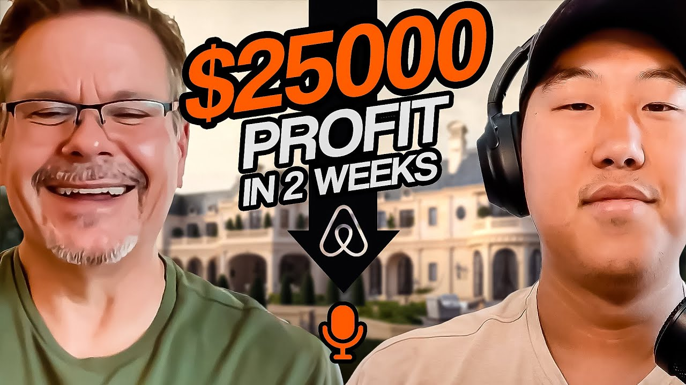

How Tom Built $25K in Bookings in 2 Weeks After Corporate Layoff (2026 Case Study)
Tom went from Capital One layoff to $5,000-$6,000/month cash flow with his first Airbnb property on the Chesapeake Bay. Learn his exact strategies, landlord negotiation scripts, and team-building approach for Airbnb arbitrage success.

Tom earns $5,000 to $6,000 per month in cash flow from his first Airbnb property on the Chesapeake Bay in Maryland. After being laid off from Capital One where he led 14 software development teams managing 120+ people, Tom and his wife went all-in on Airbnb arbitrage. Within just two weeks of going live, they secured $25,000 in bookings and built a property that guests now describe as "way better than a hotel."
This case study breaks down exactly how Tom built this Airbnb arbitrage business, including his hands-on launch approach, team-building strategies, and the landlord negotiation modifications that helped him secure a prime waterfront property.
In this article:
Quick Results: Tom's Airbnb Arbitrage Numbers
| Metric | Value | Context |
|---|---|---|
| Monthly Cash Flow | $5,000-$6,000 | After all expenses |
| Total Bookings (First 2 Weeks) | $25,000 | Booked through August, filling September |
| First 3 Airbnb Deposits | $5,000+ | Received within weeks of launching |
| Daily Time Investment | 20-30 minutes | After systems established |
| Cleaning Team Size | 3 cleaners | Built-in redundancy |
| Properties | 1 (more planned) | Chesapeake Bay, Maryland |
| Previous Experience | Zero rentals | Software engineering background |
| Portfolio Goal | 5-10 units | Long-term target |
Tom's Background: From Capital One Executive to Airbnb Entrepreneur
You don't need real estate experience to build a successful Airbnb business. Tom spent multiple decades in software engineering and corporate leadership before discovering that his management skills translated directly to short-term rental success.
The Capital One Years
Tom's career arc followed a classic tech trajectory: from hands-on coding to leading teams to organizational leadership. At Capital One's headquarters in Washington DC, he was in charge of all ATM Fleet operations, deploying software and managing approximately 120 people across 14 software development teams. His days were consumed with coordination, strategy, and the endless demands of corporate life.
The work was consuming. Tom had been following Preston on Instagram for at least a year, watching short videos about Airbnb arbitrage and thinking about starting his own business. He even registered for the Legacy Investing Show training. But corporate life had its own gravitational pull.
"These corporate gigs just suck the life out of you. I had to put this all on pause for a few months because we had a bunch of end of year activities that consumes everybody."
The Layoff That Changed Everything
In January, Capital One announced a major layoff affecting about 1,100 people, including Tom's leadership role. What could have been devastating became an opportunity. Capital One provided a generous severance package, giving Tom the runway he needed to pursue Airbnb arbitrage full-time.
Tom's wife was doing caretaking work for a disabled individual at the time. When the layoff happened, they made a life-changing decision together: she resigned from her position, and they committed fully to building an Airbnb business. No safety nets, no hedging bets.
The timing was perfect. Tom had already done the research, followed the training, and understood the model. He just needed the freedom to execute.
Treating It As An Adventure
Tom's mindset approach sets him apart from many who face similar crossroads. Rather than viewing the layoff and career change as a crisis, he and his wife chose to see it as an adventure.
"Don't look at it like this horrible situation, this risky thing. Look at it like an adventure and keep your attitude kind of positive. That's what we're doing. I continually talk my wife off the ledge because she's frequently saying 'I don't belong in this, I'm not a corporate person, I can't do this.' And I'm like, 'Don't worry about it, I'll help you through it, we'll make it.' And we've done it."
This positive framing became essential as they navigated the inevitable challenges of building a new business from scratch.
The Airbnb Arbitrage Journey: Tom's Timeline
Discovery: Finding Preston on Instagram
Situation: Working intense corporate hours while researching side income options.
Tom discovered the Legacy Investing Show through Instagram, where he spent at least a year consuming short-form content about Airbnb arbitrage before taking action. The model appealed to his analytical mindset: low risk compared to buying properties, high potential output, relatively straightforward to implement with proper guidance.
The combination of factors aligned perfectly: Tom had funding available, a genuine interest in real estate, and growing dissatisfaction with corporate life. When he says Preston's content was "a life changer," he means it literally, crediting the information and framework with enabling his entire transition.
The Annapolis Lesson: Check Regulations First
Situation: Excited to start, Tom began calling landlords in Annapolis, Maryland.
Tom and his wife initially focused on the Annapolis area, home to the Naval Academy and located near the water. It seemed like an ideal market. Tom started calling landlords, getting some responses, and thought he had checked the regulations.
Then reality hit. During a call with a landlord, the man asked how they would deal with Annapolis's STR regulations and their limited permit availability. Tom realized he had checked Anne Arundel County regulations but missed the city-specific restrictions.
"I probably lost about a week and a half of time just spinning my wheels doing that. And so nevertheless I dropped that like a hot potato."
This painful lesson became one of Tom's most important pieces of advice: verify BOTH county AND city regulations before investing any time in a market.
Finding the Perfect Property
Situation: After the Annapolis setback, Tom's wife discovered a different opportunity.
The property that would become their first Airbnb was actually found by Tom's wife. Located on the other side of the Chesapeake Bay, it wasn't where Tom had been looking. His initial reaction was skepticism.
"To be honest with you, when I first saw it I was kind of like, 'I don't know, that's a beautiful piece of property but I'm not sure people are going to want to go here.'"
Tom decided to use the landlord call as practice for his negotiation script, not expecting it to work out. To his amazement, it did. The landlord, a super sweet woman who was in real estate herself, was open to the concept after some due diligence.
The due diligence process took about three to four weeks as the landlord talked to lawyers and vetted the arrangement. During that waiting period, Tom even started looking at backup properties, wondering if the deal would fall through. Fortunately, it came together.
How to Choose a Market for Airbnb Arbitrage: Tom's Chesapeake Bay Strategy
The Chesapeake Bay is ideal for Airbnb arbitrage because it combines waterfront appeal, beach access, and authentic Maryland cultural experiences that guests can't replicate elsewhere. Tom analyzed multiple markets before landing on this property, learning valuable lessons about market research along the way.
Why Chesapeake Bay Works for Short-Term Rentals
Waterfront Premium: Properties near water command higher rates and attract guests seeking experiences beyond standard accommodations. Tom's property includes views of the Chesapeake Bay and proximity to the water that photos can showcase beautifully.
Private Beach Access: The property includes a small private beach area. When Tom's grandchildren visited on Father's Day, they played on that beach all day. That moment crystallized the property's appeal, showing that families will pay premium rates for authentic waterfront experiences.
"My grandkids came down, they played on that beach all day and I'm like, 'That's a key, that is a key right there.'"
Local Culture Integration: The Chesapeake Bay area has deep Maryland traditions, particularly around steamed crabs. Tom leveraged this by partnering with a local commercial crabber who lives across the street. Guests can order fresh crabs delivered directly to the property, complete with crab paper, at a significant discount.
Seasonality Considerations: Tom understands that post-Christmas months (January-February) represent the seasonal low point based on Air DNA data. His strategy for future properties includes targeting warmer climates to hedge against this seasonality.
Tom's Market Research Process
Tom's first step was subscribing to Air DNA for market data. He emphasizes this investment as crucial for data mining and understanding market fundamentals before committing to any property.
Airbnb Arbitrage Strategies That Actually Work: Tom's Playbook
The difference between profitable and unprofitable Airbnb arbitrage comes down to execution and systems. Tom attributes his rapid success to five core strategies developed from his corporate management background.
Strategy 1: The Hands-On Launch Approach
What it is: Tom and his wife chose to set up their first property themselves rather than delegating everything from the start.
Why it works: By being hands-on, they learned every aspect of the business, what Tom calls understanding "how to make the sausage." Tom actually has a camper trailer that he turned into a mobile workplace, parking it at the unit while they did the setup.
This approach was intentional for their first property. They wanted to understand every ingredient, every process, every challenge before delegating. The knowledge gained becomes invaluable when managing teams remotely.
Tom's Results with This Strategy:
-
Deep understanding of every operational detail
-
Ability to write detailed guides for cleaners and contractors
-
Knowledge of what can go wrong and how to prevent it
-
Foundation for scaling with delegation
"We really wanted to learn the business, learn all the ingredients, how do you make the sausage. We were very instructive, we really learned a ton by doing that."
Strategy 2: Building Cleaner Redundancy
What it is: Instead of relying on one cleaner, Tom built a team of three cleaners with cross-checking responsibilities.
Why it works: Single points of failure kill Airbnb businesses. If your one cleaner is unavailable, you have no backup. Tom recognized this risk immediately from his corporate experience managing teams.
His solution went beyond simple backup coverage. He asked each cleaner if they would be willing to do quality checks on the other cleaners' work. This creates a learning loop: cleaners reviewing others' work internalize the standards better, improving their own performance.
Tom's Results with This Strategy:
-
Never vulnerable to a single cleaner being unavailable
-
Built-in quality control without owner inspection
-
Cleaners improve through reviewing others' work
-
Team mentality rather than contractor relationship
"We need redundancy here. If this person's out, they're not available, we're going to be messed up. So there was another one we interviewed, I said let's get her on, bring her on. And then finally a third one came on."
Strategy 3: The Hotel-Quality Standard
What it is: Tom communicates a specific mindset shift to his cleaners: they're not cleaning a home, they're preparing a superior hotel room.
Why it works: The framing changes expectations and execution. Home cleaning means acceptable tidiness. Hotel preparation means precision staging, exact replication of listing photos, and crisp presentation that exceeds guest expectations.
Tom breaks cleaning into three distinct stages that his team follows:
"Just make sure your mindset is not 'you're cleaning the Joneses' home.' You're not doing that. You're cleaning a hotel room, a superior high quality hotel room, and it has to be precise."
Tom's Results with This Strategy:
-
Guest feedback consistently praises cleanliness
-
Photos match reality exactly, building trust
-
Repeat bookings from guests who know what to expect
-
Reviews highlight hotel-quality experience
Strategy 4: Local Partnership Building
What it is: Tom actively cultivates relationships with local service providers and businesses to create unique guest experiences.
Why it works: Local partnerships differentiate your property and create memorable experiences that guests talk about. Tom discovered that his neighbor across the street is both a licensed contractor AND a commercial crabber on the Chesapeake Bay.
This neighbor now supplies crabs directly to Tom's guests at a significant discount, delivers them personally, and even brings the crab paper. One guest texted Tom raving about "Captain Jimmy" showing them his live crabs. That's a five-star review moment you can't manufacture.
"I talked to him and I said, 'Hey, would you be interested in supplying crabs to my guests? I can put you in my listing.' He's like, 'Absolutely.' And he gives like this ridiculous discount. The first guest came, he delivered it to them, they texted me back and they were like, 'Man, Captain Jimmy is amazing!'"
Tom's Results with This Strategy:
-
Unique experiences competitors can't easily replicate
-
Local recommendations that feel authentic
-
Reliable contractor network discovered through community
-
Guest testimonials about memorable moments
Strategy 5: Modified Landlord Script
What it is: Tom adapted the Legacy Investing Show landlord script to include a comfort-building phase before pitching the arbitrage concept.
Why it works: Cold pitching arbitrage can trigger landlord defenses. By first asking about property details and costs, Tom establishes rapport and positions himself as a serious, analytical potential partner rather than someone with a get-rich-quick scheme.
Tom's Modified Approach:
"For example, I ask them, 'Can you walk me through the numbers again?' To make them a little bit more comfortable before I give the pitch. Once I get them a little bit more comfortable and trusting me, then I start talking about what we're trying to do here."
Tom's Airbnb Arbitrage Results: The Numbers
Tom generates $5,000-$6,000/month in net cash flow from one Chesapeake Bay property. Here's the complete financial breakdown of his Airbnb arbitrage business.
Before vs. After Airbnb Arbitrage
| Metric | Before (Capital One) | After (Airbnb Business) |
|---|---|---|
| Monthly Income Source | Corporate salary | $5,000-$6,000 Airbnb cash flow |
| Properties Managed | 0 | 1 (more planned) |
| Daily Time Commitment | Full corporate schedule | 20-30 minutes administrative |
| Teams Managed | 120+ people across 14 teams | 3 cleaners, local contractors |
| Work Enjoyment | Burned out on corporate life | "We have been having so much fun" |
| Location Freedom | Office-based at HQ | Remote management capability |
Booking Performance
| Metric | Value | Notes |
|---|---|---|
| Total Bookings (2 Weeks) | $25,000 | Revenue booked, not yet received |
| First 3 Airbnb Deposits | $5,000+ | Actual cash received |
| August Bookings | Nearly full | Peak summer demand |
| September Bookings | Filling | Strong shoulder season |
| Booking Frequency | Daily new bookings | Calendar filling consistently |
Key Milestones Achieved
-
✅ Secured Waterfront Property: Chesapeake Bay location with private beach access
-
✅ $25K Booked in 2 Weeks: Rapid validation of market demand
-
✅ Built 3-Cleaner Team: Redundancy and quality-check system established
-
✅ Local Partnership Network: Commercial crabber, handyman, licensed contractor
-
✅ Automated Messaging: Guest communication systems operational
-
✅ Price Labs Integration: Dynamic pricing optimizing rates
-
✅ Family Expanding Business: Daughter and son-in-law (also laid off from Capital One) starting their own property
Airbnb Arbitrage Lessons: What Tom Learned the Hard Way
These five lessons took Tom from corporate refugee to $25K in bookings within two weeks. Each one came from real experience and could save you weeks of wasted effort.
"Every business has bumps and challenges in the road. Don't look at mistakes as a negative thing, look at them as a positive because you're gonna learn something."
Lesson 1: Check Regulations First
The Mistake: Spending time researching and calling landlords in a market before fully understanding STR regulations.
What Happened: Tom spent approximately a week and a half researching Annapolis, Maryland. He checked what he thought were the relevant regulations (Anne Arundel County), started calling landlords, and was getting some responses. Then a landlord asked how they would deal with Annapolis's city-specific STR restrictions and limited permit availability.
The entire effort was wasted because Tom had missed city-level regulations that made the market unworkable.
Why This Matters: Every hour spent on an unworkable market is an hour not spent on viable opportunities. Regulation research takes minutes compared to property research and landlord calls.
"The very first thing I do now is check the laws. I went back and watched your videos Preston because you nailed it. The first thing you were saying was check the laws. I wish you would have hammered that in a little bit more."
Lesson 2: Treat Property Search as a Numbers Game
The Mistake: Spending hours analyzing properties in detail before getting landlord commitment.
What Happened: Tom initially fell into the trap many beginners experience: running detailed numbers, calculating projections, and doing deep analysis on properties before even talking to landlords. Multiple times he invested days of work only to have landlords say "we're not doing that."
Why This Matters: The property search is fundamentally a numbers game. You need to talk to many landlords to find ones open to arbitrage. Deep analysis should come AFTER initial interest, not before.
"Find out what the laws are, then find a market, make sure you can do it, and then once you do it start calling landlords. Don't take a deep dive on the numbers until you get someone to agree that 'yeah okay I'm open to that.'"
Lesson 3: Build Your Team Before You Need Them
The Mistake: Waiting until the property is ready to launch before recruiting boots-on-the-ground team members.
What Happened: Tom and his wife did some interviews early but weren't happy with what they found. They decided to get down to the property and handle setup themselves while continuing to search. The delay in having a reliable team created unnecessary stress during launch.
Why This Matters: Remote management depends entirely on local team quality. Especially if you're not local, having handymen and cleaners vetted and ready before you need them is critical. The recruiting process also tests communication skills and commitment levels.
"The very first thing I would do is start calling the team, recruiting the handyman and the cleaners. Having them boots on the ground is extremely important. Getting them in early is critical because you also get to test them."
Lesson 4: Create Systems for Cleaner Excellence
The Mistake: Writing cleaning guides and expecting cleaners to follow them automatically.
What Happened: Tom and his wife created detailed guides with photos and instructions. But writing guides is one thing; getting cleaners to actually follow them is another. They had to develop systems for accountability and continuous improvement.
The solution: having cleaners quality-check each other. This creates accountability without the owner doing inspections, while also reinforcing the standards through repeated exposure to the checklist.
Why This Matters: Cleaning quality directly impacts reviews, and reviews drive bookings. A system that self-reinforces standards is more sustainable than owner-driven inspection.
"That's one thing writing it, but getting them to follow it is another thing. So what we did, I asked each one of them individually if they would be willing to do a quality check for the other cleaners."
Lesson 5: Have Your Documents Ready
The Mistake: Not having lease and sublease agreements prepared when landlords express interest.
What Happened: When landlords showed openness to the arbitrage concept, momentum could be lost if Tom didn't have professional documentation ready to send. Having state-specific leases and sublease agreements prepared allowed him to maintain momentum.
Why This Matters: Landlord interest is often time-sensitive. The longer between "yes, I'm interested" and "here's the paperwork," the more opportunity for second thoughts or competing offers.
"I would recommend having the leases ready. If your landlord doesn't have a lease and a sublease, have something that is local to the state you're in. As soon as all that's done, say 'Hey, I got a Maryland state lease, I have my sublease agreement, can I shoot it to you?'"
Best Tools for Airbnb Arbitrage: Tom's Tech Stack
Tom manages his Chesapeake Bay property with minimal daily time using these tools. Here's the tech stack that powers his $5,000-$6,000/month business.
Essential Tools Overview
| Category | Tool | Purpose | Why Tom Chose It |
|---|---|---|---|
| Dynamic Pricing | Price Labs | Automated rate optimization | Sophisticated pricing that adjusts to demand |
| Market Research | Air DNA | Data-driven market analysis | First investment before any property search |
| Guest Communication | Airbnb Messaging | Scheduled messages and variables | Built-in automation for check-in instructions |
| Property Setup | Legacy Investing Show Spreadsheets | Furniture and supplies lists | Proven templates to copy and refine |
Price Labs: Dynamic Pricing
What it does: Automatically adjusts nightly rates based on demand, seasonality, local events, and market conditions.
How Tom uses it: Tom configured Price Labs with higher category pricing for his premium waterfront property. The tool handles rate optimization automatically, allowing him to focus on other aspects of the business. Configuration took time as a complete newbie, but the investment pays off through optimized revenue.
Pro tip: Spend time on initial configuration. The learning investment speeds up dramatically for subsequent properties.
Air DNA: Market Research
What it does: Provides comprehensive market data including average daily rates, occupancy rates, revenue potential, and competitive analysis.
How Tom uses it: Air DNA was Tom's first investment, even before serious property searching. He describes it as "a huge boost in data mining" that helps evaluate markets and understand seasonality. The platform showed that post-Christmas months are the seasonal low point for his Chesapeake Bay market.
Pro tip: Subscribe to Air DNA before calling landlords. Data-driven confidence helps in negotiations and prevents investing time in unworkable markets.
Tom's Advice for Airbnb Arbitrage Beginners
"Just don't get discouraged. Start small and build up from there."
If Tom were starting over today, here's exactly what he would do:
Step 1: Getting Started (Week 1-2)
Tom emphasizes that his rapid success might be exceptional, but the framework applies universally. His specific recommendations for beginners:
Verify Regulations First: Before any other research, confirm you can legally operate short-term rentals in your target market. Check both county AND city regulations. This prevents wasting weeks on unworkable opportunities.
Subscribe to Air DNA: Data-driven decisions beat gut feelings. Understanding market fundamentals before committing time and money prevents costly mistakes.
Consider Starting Small: Tom mentions that even a one-bedroom unit can be a learning experience with lower upfront capital. The goal is building experience and cash flow, not starting with a portfolio.
Step 2: Finding Properties (Week 3-6)
Treat It As a Numbers Game: Call many landlords with initial pitches before investing time in deep analysis. Get interest first, then run numbers.
Modify the Script: Build rapport before pitching. Ask about property details and costs to make landlords comfortable, then transition to explaining your arbitrage concept as a partnership.
Don't Get Attached: Tom looked at backup properties even while his primary deal was in progress. Landlord due diligence can take weeks; keep your pipeline moving.
Step 3: Setting Up Your First Property (Week 7-10)
Be Hands-On for First Property: Learn every aspect of setup so you understand operations deeply. This knowledge becomes essential for managing remote teams later.
Recruit Team Early: Start finding cleaners, handymen, and contractors as soon as you secure the property. Test their communication and reliability during the setup phase.
Build Redundancy: Hire multiple cleaners and create cross-checking systems for quality control.
Mindset Advice from Tom
Tom's most powerful advice relates to perspective rather than tactics:
View Challenges as Adventures: The mindset shift from "this is risky and scary" to "this is an adventure" changes everything. Tom and his wife have been working hard but having fun because they chose to see it that way.
Support Your Partner: Tom regularly helps his wife through moments of doubt. Business partnerships need emotional support alongside operational collaboration.
Recognize the Broader Impact: Tom now employs local cleaners, contractors, and partners with local businesses. Small business creates jobs and community connections in ways corporate work rarely does.
"One of the realizations I've had, and I've heard this for years, is how small businesses create jobs. And now that I'm doing it I'm like, 'Wow, I really understand that now.' I'm creating jobs for these people in that local economy and they're extremely happy I'm there."
Watch Tom's Full Interview
Video highlights:
-
0:00 - Tom's Capital One background and layoff story
-
5:30 - The decision to go all-in with his wife
-
10:45 - The Annapolis regulation mistake
-
15:20 - Property walkthrough and design philosophy
-
22:00 - Building the cleaning team with redundancy
-
26:30 - The Captain Jimmy crab partnership
-
28:45 - Advice for beginners and modified landlord script
Frequently Asked Questions
How much money can you really make with Airbnb arbitrage?
Tom generates $5,000-$6,000/month in net cash flow from one Chesapeake Bay property. He secured $25,000 in bookings within just two weeks of going live, with the calendar filling through August and into September. His first three Airbnb deposits totaled over $5,000.
Results vary based on property location, amenities, and execution. Tom's waterfront property with private beach access commands premium rates that wouldn't be possible with a standard suburban home.
Is Airbnb arbitrage still worth it in 2026?
Based on Tom's results, the fundamentals remain strong for operators who execute well. His property filled rapidly even as a new listing with no reviews, demonstrating that demand exists for well-positioned properties with desirable amenities.
Key success factors:
-
Unique property features that guests can't replicate (waterfront, private beach)
-
Hotel-quality cleaning and staging standards
-
Local partnerships that create memorable experiences
-
Proper market research and regulation verification
What's the biggest risk with Airbnb arbitrage?
Tom identifies several risks he actively manages:
Regulation Changes: STR laws evolve. Tom's experience with Annapolis shows how quickly a market can become unworkable. Always verify current regulations before investing.
Team Reliability: Single points of failure kill businesses. Tom built redundancy with three cleaners and local contractor relationships to prevent operational disruptions.
Seasonality: The Chesapeake Bay has slow months post-Christmas. Tom plans to expand to warmer climate properties to hedge against seasonality.
Start Your Airbnb Arbitrage Journey
Ready to build your own Airbnb arbitrage business like Tom?
Learn more about Legacy Investing Show
Related Success Stories
Helpful Resources
About Legacy Investing Show
Legacy Investing Show is Preston Seo's comprehensive Airbnb arbitrage training program. Since founding, the program has:
-
Trained 2,000+ students across the United States
-
Generated $10M+ in cumulative student revenue
-
Built an active community of short-term rental investors
-
Produced numerous students earning $10K+/month
Preston Seo created Legacy Investing Show to teach the exact systems that scaled his business, providing the mentorship, scripts, and community that accelerate success.
blog resources | Watch free training
This case study is based on Tom's video interview conducted in 2023. All statistics and quotes are directly from Tom's experience. Individual results vary based on market, effort, and capital invested.
Last updated: March 21, 2026
Preston Seo
Real estate investor and financial educator helping people build generational wealth through smart investing strategies.
Frequently asked questions
- How much money can you make with Airbnb arbitrage?
- Tom generates $5,000-$6,000/month in cash flow from his first Airbnb property on the Chesapeake Bay. He secured $25,000 in bookings within the first two weeks of launching, with the property booked solid through August and filling into September.
- Is Airbnb arbitrage still profitable in 2026?
- Yes. Tom started his Airbnb arbitrage business after a corporate layoff and achieved profitability within weeks. Success depends on market selection, property amenities like waterfront access and hot tubs, and building a reliable local team for cleaning and maintenance.
- How long does it take to make money with Airbnb arbitrage?
- Tom received his first Airbnb deposits within weeks of launching. He earned over $5,000 from his first three Airbnb payouts. Most Legacy Investing Show students get their first property in 30-60 days with proper execution of the system.
- Do you need experience to start Airbnb arbitrage?
- No. Tom came from software engineering and project management at Capital One with no rental property experience. His corporate skills in managing teams, creating processes, and analyzing data transferred directly to building a successful Airbnb business.
- How do you negotiate with landlords for Airbnb arbitrage?
- Tom modified the Legacy Investing Show script by first asking landlords about the property details and monthly costs to make them comfortable before pitching the arbitrage concept. He positions it as a win-win partnership rather than a traditional rental arrangement.
- What is the best market for Airbnb arbitrage?
- Tom chose the Chesapeake Bay area of Maryland for its waterfront appeal, beach access, and tourist demand. The property's unique location near water with a private beach creates experiences guests cannot replicate elsewhere.
- Is Legacy Investing Show worth it?
- Based on Tom's results, the ROI speaks for itself: $25,000 in bookings within two weeks and $5,000-$6,000/month ongoing cash flow. Tom credits the mentorship, scripts, community forum, and step-by-step framework for accelerating his success after his layoff.
- How do you build a reliable cleaning team for Airbnb?
- Tom built redundancy by hiring three cleaners instead of one. He has each cleaner quality-check the others' work, which reinforces standards while providing backup coverage. He treats cleaning as three stages: cleaning, staging (matching photos exactly), and quality checking.
- What's the difference between Airbnb arbitrage and buying property?
- Arbitrage requires less capital (first month's rent, deposit, and furnishing) and offers faster scaling with lower risk since you can exit leases. Tom chose arbitrage to build cash flow after his layoff without needing a large down payment for property purchase.
- How do you check Airbnb regulations before starting?
- Tom learned the hard way that checking regulations first is critical. He lost about a week researching Annapolis before discovering city-specific STR restrictions. Always verify both county AND city regulations before investing time in a market.